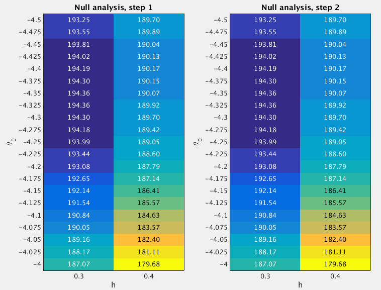

14.2 GSEA Round 2
Last updated: 2016-12-23
Code version: 5207fd7a7eb90dc3f613ea6d035458fa39374849
14.2.1 Fit the null model
From the Round 1 null analysis (Section 14.1), I found that almost 99.1% posterior mass is concentrated on the settings h=[0.3 0.4] and theta0=[-4.5 -4.25]. In Round 2, I used a finer grid. Specifically, I used the grids theta0=(-4.5:0.025:-4)' and h=[0.3 0.4] when fitting the null model. I estimated the (unnormalized) log importance weights (“pseudo-likelihoods”) for all 42 sets of (h,theta0) under null.

After normalizing the log “pseudo-likelihoods” (logw.step*) to posterior probabilities (posp.step*), we can see that almost 99.8% posterior mass is concentrated on the settings h=[0.3 0.4] and theta0=(-4.5:0.025:-4.1)'.
theta0.index <- as.character(null.df$theta0) %in% as.character(seq(-4.5,-4.1,by=0.025))
sum(null.df$posp.step2[theta0.index]) ## [1] 0.997720614.2.2 Fit the enrichment model
To perform GSEA, I set h=[0.3 0.4] and theta0=(-4.5:0.025:-4.1)', since the null analysis suggests that almost 99.8% posterior mass is placed on these settings. For the log-fold enrichment parameter, I use the grid theta=(0:(3.8/100):3.8)', based on the Round 1 enrichment analysis (Section 14.1). The following table lists the GSEA results.
Now we compare the enrichment Bayes factors from Round 1 and 2 analyses.